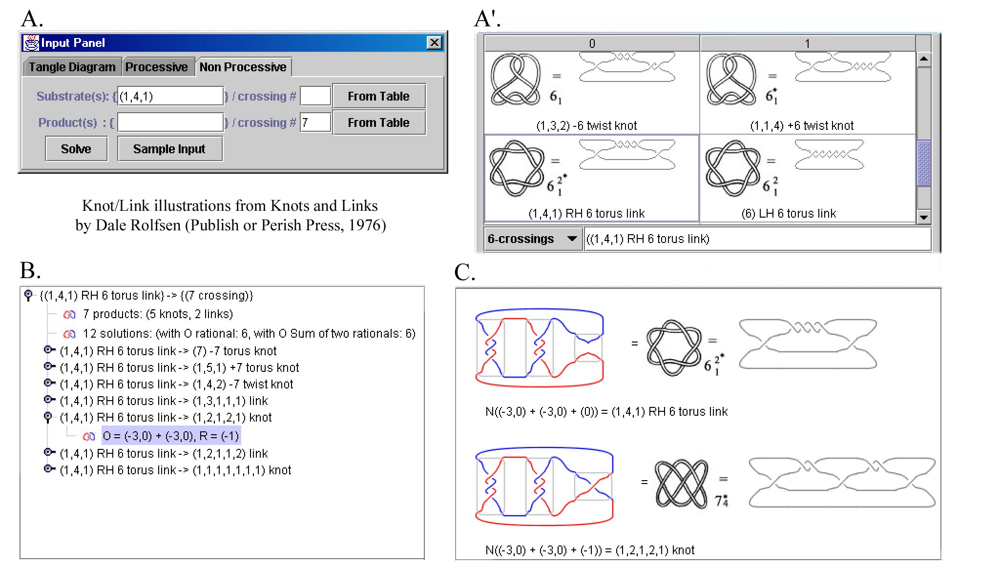
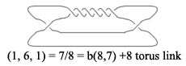
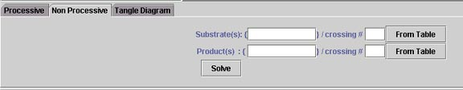
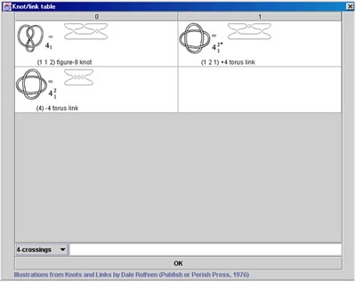
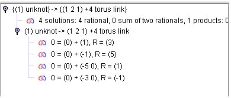

TangleSolve Tutorial
Overview
Tangle Solve graphical user-interface:

Panel A: Input Pane. This is where the user inserts the data. Non Processive tab (shown in the figure). This case is used to analyze mechanisms of enzymes whose action is known (or believed) to be non-processive, i.e. such that the enzyme binds the two sites and mediates one single recombination reaction before releasing the DNA. The ideal input data consists of one specific substrate topology and one product topology. Therefore in practice some knowledge about substrate and product topologies is needed (exact knot or catenane type, a range of possible knot types, or, at least, crossing number).The user is asked to input the topological information of substrate and of recombination product. The program then solves the resulting system of two tangle equations and displays the solutions in the Selection pane (Panel B in the figure). If more than one knot or catenane type are listed in each input line, the program computes all systems of two equations that accommodate the given data and finds solutions for them. All solutions found are shown in the selection pane.
Processive tab. This option is used to analyze the action of enzymes known (or assumed) to act processively ( i.e. enzymes that bind to the recombination sites and act multiple times before releasing the DNA molecule). Ideally the user would input one substrate topology, and one or more product topologies in a specific order. In practice some knowledge about substrate and product topologies is needed (exact knot or catenane type, a range of possible knot types, or, at least, crossing number). Knowing the order in which the recombination products are generated is not necessary for the analysis, although it improves accuracy of the resuts. If the substrate and the order of the products is known a new input pane is generated where the user can insert the data. The program computes solutions for the corresponding system of tangle equations. If the order is unknown, then the program generates all possible systems of tangle equations to accommodate the data. The number of recombination rounds (number of times that the enzyme acts on each substrate molecule) is a variable that determines the number of equations and diagrams displayed, for each solution set, in panel C. This variable allows to make predictions on recombination products.
Tangle Diagram tab. This option allows the user to insert known values for the tangles Of, Ob and R to obtain their graphical representation.
Panel B: Selection Pane. All solutions found by the program are listed here. The user can select a solution by clicking on it, and this solution is then displayed in panel C. Panel C: Display Pane. Once a given solution is selected, the diagrams corresponding to the system of two equations, including the tangle diagrams, are drawn. The tangles are represented in their canonical form. Knots and links (catenanes) are represented both in their 4-plat form and with the standard knot diagram from D. Rolfsen's knot table (from [K1], with permission of the author).
Step by Step guide:
The tangle analysis using this program can be done in three steps:
1.- Input the experimental data as a 4-plat vector (a1,a2,...,an), 4-plat classifying rational number b/a (or the Conway notation b(a,b)), or by selecting the knot or catenane diagram from the knot table. A sample input can be seen by pressing the Sample input button.
NOTE: by convention the unknot (i.e. one circle that can lay flat on a plane without going over itself) is considered to have 1 crossing since its 4-plat classifying vector is (1). Under this convention the only element with 0 crossings is the unlink, that consists of two unknotted circles, and whose 4-plat vector is (0).
2.- Press the Solve button to obtain the set of solutions.
3.- Select any of the listed solutions to obtain its graphical representation. The diagrams allow the users to discard solutions which do not satisfy certain biological constraints (e.g. site orientation of both substrate and product).
We illustrate these steps with a concrete example:
Tangle analysis of Xer site-specific recombination on catenated substrates.
Xer is a site-specific recombination system of Escherichia coli that resolves dimeric molecules. When acting on unknotted substrates, the enzymes XerC and XerD act cooperatively to produce a catenated product with a single topology: a right-handed 4-crossing torus catenane [S3]. No evidence of processive recombination has been found for Xer recombination. This means that the enzyme binds to its substrate, mediates a single recombination event, and releases the DNA molecule. Therefore, to a single reaction correspond only one substrate knot type and one product knot type. The experimental work of Bath et al. [S5] showed that Xer recombination on a right-handed 6-crossing torus link (generated by Int recombination) results in a 7-crossing product of unknown type.
2. Input data
The input knot/catenane must fall into the category of 4-plat knots/links. 4-plats are obtained by starting with four strands, alternatively braiding the first with the second, and the second with the third, and finally connecting the strands as shown in the figure below.

All knots with 7 or less crossings, as well as all catenanes with 6 or less crossings, belong to the 4-plat family. Furthermore, all DNA knots and catenanes products of site-specific recombinations that have been observed under the electron microscope have also been 4-plats.
4-plats admit a classification and so can be represented by a classifying vector with integer entries, or by a classifying rational number.
The vector record the number of times a pair of strands goe around each other. A rational number is assigned to this vector by a continued fraction calculation (illustrated below). The figure shows the (1, 6, 1) catenane (note the crossing sign convention: all these crossings are positive). The corresponding continued fraction is 1/(1 + 1/(6 + 1)) = 7/8. This catenane is the right-handed 8-crossing torus catenane, with classifying rational number 7/8, and associated Conway symbol b(8,7).
In the input pane the knot and catenane types of substrates and products of recombination can be entered in several different formats: in mathematical form using the canonical vector or the classifying rational number for the 4-plat, or in graphical form by chosing the desired knot or catenane from the knot table.In the case of Xer recombination on unknotted substrates or on substrates that are right-handed (RH) 6-crossing torus catenanes, the input data is:
Substrates:
Reaction 1) Unknot = (1); Conway symbol = b(1,1); rational number = 1
Reaction 2) RH 6 torus catenane = (1 4 1); Conway symbol = b(6,5), rational number = 5/6
Products:
Reaction 1) RH 4 torus catenane = (1 2 1); Conway symbol = b(4,3); rational number = 3/4
Reaction2) product with 7 crossings
These data must be entered into the input area shown below:

In the "unknot to b(4,3)" case.
Input the knot/catenanes type of the substrate by typing 1 into the substrate text field, or select the unknot from the knot table by pressing the button From Table.
In the same manner type (1 2 1), b(4,3) or 3/4 into product text field, or select the knot from the knot table. The knot table is shown below:

The table allows you to see the pictures of 4-plat knot/catenaes up to 10 crossings and allows you to select them. Press the pop-up button in the lower left corner that says x-crossings to browse through different crossing knots/catenanes. Double-click on the knot/link diagram to make your selection.
Once the data is inserted, press the Solve button.
3. The solutions
A list of solutions is displayed in the output pane. The next figure shows the list after expanding the tree control:

These are the solutions obtained for Xer recombination in the "unknot to RH4 torus catenane" case. Select a solution from the list to see the corresponding tangle and knot diagrams of the corresponding enzymatic mechanism.